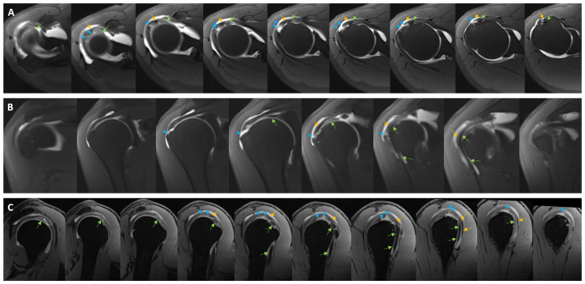

350 — Vai: rách chóp xoay, AHI & Goutallier / Rotator cuff
Tags: pattern:rach-chop-xoay vung:khop-vai score:Goutallier protocol:MRI-khop-vai
Mức chắc chắn (certainty): tổng hợp y văn (literature synthesis) — nhóm tự biên từ y văn mở, chưa gắn ca nguyên văn đơn lẻ.
1. Tổng quan — gân thoái hóa + chỏm di lệch lên + cơ hóa mỡ
- Gân trên gai (supraspinatus) thoái hóa theo tuổi (rách toàn bộ > 25% sau 65 tuổi) — TẠI SAO rách toàn bộ bề dày làm thông ổ khớp với túi dưới mỏm cùng-delta: gân là mái ngăn duy nhất giữa 2 khoang, đứt là thuốc cản quang/dịch tràn qua.
- Chỏm di lệch lên khi mất chóp xoay — TẠI SAO AHI < 7 mm = mạn không khâu được: cơ delta kéo chỏm lên, khớp đảo ngược mới cứu.
- Cơ hóa mỡ (Goutallier 3–4: mỡ = hoặc > cơ) — TẠI SAO khâu vô ích: cơ đã mất đơn vị co rút, rách lại 50–70%.
- Ảo ảnh góc thần kỳ (magic angle ~55°): gân sáng giả trên T1/PD TE ngắn — kiểm tra T2 TE dài > 60 ms, biến mất là giả.
2. Gamut đau vai + yếu dạng (Gamut)
- Dày gân + tín hiệu trung gian, T2 không sáng bằng dịch: viêm gân (tendinosis) — vật lý trị liệu + chích.
- Dịch xuyên toàn bộ bề dày + AHI < 7 mm + Goutallier 3–4: rách mạn không khâu — thay khớp đảo ngược.
- Rách mặt khớp + vận động viên ném: Bankart/SLAP — nội soi khâu sụn viền.
- Vôi gân + đau cấp: viêm gân vôi hóa — chích rửa (barbotage).
3. Bảng so sánh phân biệt (ma trận đối chiếu)
| Thực thể (entity) | Hình ảnh điển hình | Chốt vào (rule-in) | Chốt loại (rule-out) | Gợi ý xác nhận |
|---|---|---|---|---|
| Viêm gân | Dày + tín hiệu trung gian, T2 < dịch; magic angle mất ở TE > 60 ms | Không xuyên bề dày | Dịch xuyên → rách toàn bộ | Vật lý trị liệu + chích |
| Rách toàn bộ mạn | Dịch T2 xuyên articular-bursal + AHI < 7 mm + Goutallier 3–4 | Thông 2 khoang + mỡ ≥ cơ | Goutallier 0–2 + AHI thường → khâu được | Thay khớp đảo ngược khi 3–4 |
| Bankart/SLAP | Sụn viền trước-dưới rách + Hill-Sachs + thuốc vào ổ | Trật tái diễn + Bankart xương/mềm | Không trật → chóp xoay | MRA + nội soi Bankart |
| Vôi hóa gân | Nốt vôi + phù + đau cấp, không đứt sợi | Vôi + cấp + còn sợi | Mất sợi → rách | Barbotage + NSAID |

Rách gân trên gai lan rộng (mũi tên) trên axial/coronal/sagittal. Nguồn: Ertogrul et al., Medicina 2026 Fig. 2, CC BY 4.0.4. Protocol MRI vai
- MRI 3T + PD/T2 fat-sat 3 mặt + T1 sagittal chữ Y (Goutallier) + MRA khi nghi sụn viền; đo AHI trên coronal (thường 7–14 mm).
flowchart TD
A[Đau + yếu dạng tay] --> B{Dịch xuyên bề dày?}
B -->|Có| C{AHI + Goutallier?}
C -->|<7mm + độ 3-4| D[Đảo ngược khớp]
C -->|Thường + 0-2| E[Khâu chóp xoay]
B -->|Không| F{Trật tái diễn? Bankart}
5. Cạm bẫy
- Magic angle ~55° gọi nhầm rách bán phần — T2 TE > 60 ms mới kết luận.
- Rách không triệu chứng sau 65 tuổi (> 25%) mổ oan — lâm sàng + test Jobe/drop-arm mới mổ.
- Bỏ sót rách dưới vai (subscapularis) khi chỉ nhìn trên gai — axial + lift-off test.
6. Tự lượng giá — Blind Quiz
Ca 1 — Đau yếu dạng mạn, không giơ tay quá đầu. Đọc MRA.
- Hỏi: rách gân nào? Lan mấy gân? AHI bao nhiêu thì hết khâu được?
Bấm để hiện đáp án
- Dấu hiệu (findings): rách trên gai lan rộng nhiều mặt cắt (mũi tên), có thể kèm dưới gai/dưới vai.
- Chẩn đoán (diagnosis): rách chóp xoay rộng — khâu được khi AHI 7–14 mm + Goutallier 0–2; AHI < 7 mm + độ 3–4 → thay khớp đảo ngược.
- Nguồn: Ertogrul et al., Fig. 2, CC BY 4.0.
Ca 2 — Gân dày + sáng PD nhưng T2 fat-sat tối: viêm hay rách? Vì sao? (Bảng mục 3.)
Bấm để hiện đáp án
- Viêm gân/magic angle: không sáng bằng dịch T2 + mất ở TE > 60 ms — vật lý trị liệu, không mổ.
Ca 3 — Trật vai tái diễn 3 lần + lõm Hill-Sachs: chóp xoay hay Bankart? (Bảng mục 3.)
Bấm để hiện đáp án
- Bankart trước-dưới: MRA + nội soi khâu sụn viền (khác rách chóp xoay tuổi già).
Bài liên quan chéo
- 300 – Tổng quan MSK
- 330 – U xương (ABC mỏm quạ đau vai)
- 310 – Xương phụ (os acromiale giả rách)
Không dùng để chẩn đoán độc lập khi chưa có người hướng dẫn.